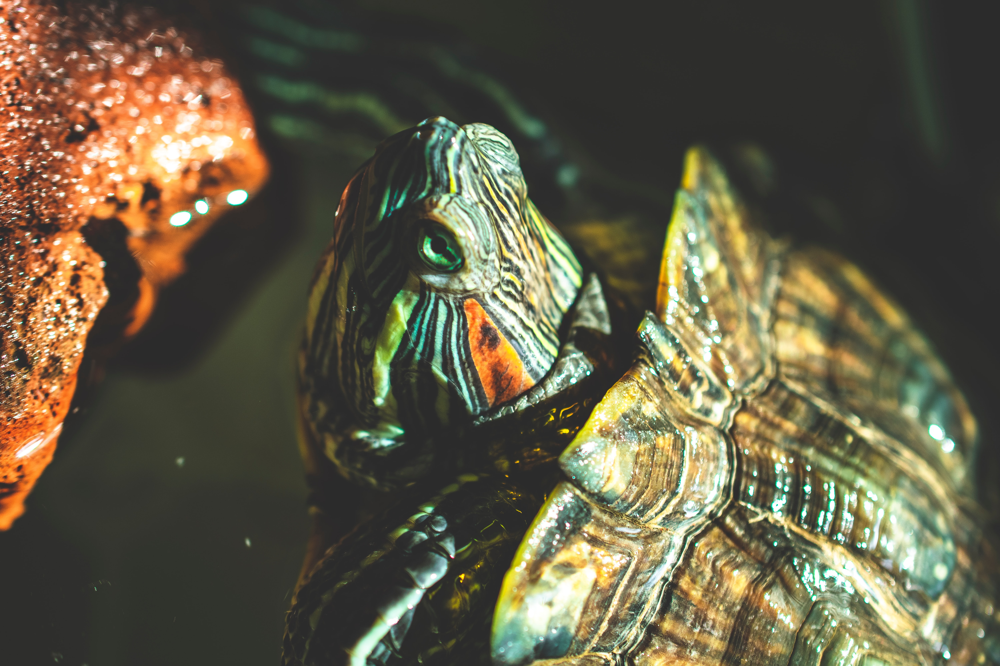
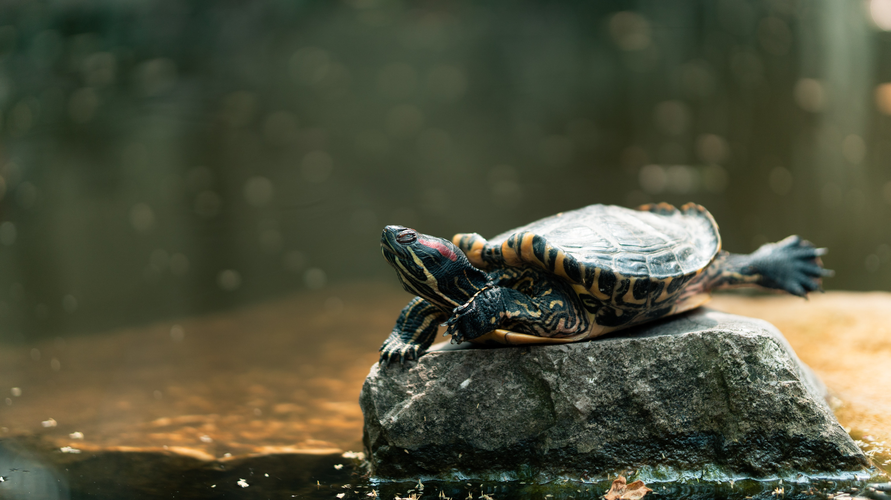

Turtles are much better pets than they are given credit for ... let me explain. When I recieved my first pet turtle I had no idea what to expect. It was a ginormous Red Eared Slider named Shelly. I quickly became attached to Shelly and was eventually surprised with two more pet turtles named Randi and Ethyl (who were later renamed Squirtle and Scarlette). Squirtle is an Eastern Painted Turtle and Scarlette is also a RES. If you're unfamiliar with what a Red Eared Slider looks like, check out the adorable one below.
 Photo by Jorge Aguilar on UnsplashFun Fact: Red Eared Slider are the most common breed of pet turtle!
First of all,they are much friendlier than they are given credit for. Check out this video.
They are also super cute when they bask in the sun to absorb UVA and UVB lights. Their legs stretch out in some pretty funny ways. Below is a photo of one basking by a waterfall.
If I've convinced you, and you want to know how to prepare for your future pet turtle, check out: PetSmart Guide to Turtles